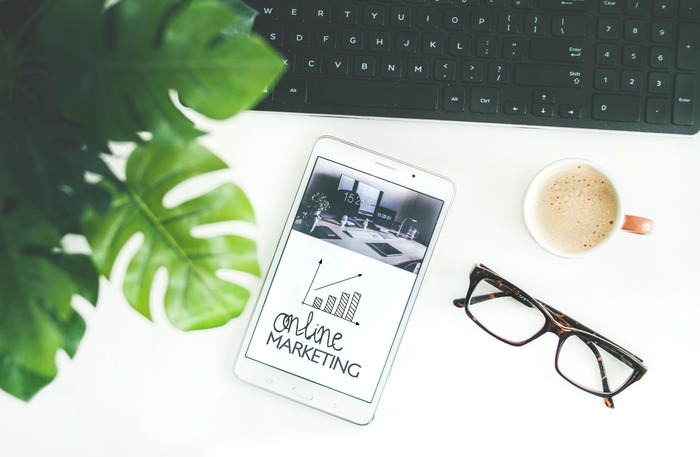

GAMIFICATION
Despre cum alte domenii invata din jocurile video
Marketing, domeniul care se ocupa cu diferite strategii pentru a convinge populatia sa cumpere un anumit produs sau sa ramana loiali unui anumit brand foloseste o noua metoda pentru a-si atrage clientii, Gamification. Partea dificila este ca aceasta metoda este grea de folosit deoarece necesita multa inovare si creativitate. Partea interesanta este ca un Gamer recunoaste mult mai usor aceste "smecherii" folosite si nu se lasa atat de usor pacalit.
In 2014 a fost publicat un articol unde s-a prezentat cateva idei despre termenul de Gamification folosit in diferite domenii ce nu au legatura cu jocurile video. Aceasta metoda fiind atat de eficienta incat tot mai multe companii o adopta. Cel mai des folosita fiind in domeniu de Marketing.
Pentru a intelege mai bine cum se adopta metoda, prima data trebuie sa percepem ce este o "relatie de marketing". Ea se refera la relatia dintre companie/produs si client, unde fiecare isi asuma un rol si este raspunzator pentru a avea o relatie de lunga durata. Adica, daca spre exemplu Adidas creaza un produs de calitate atunci el pentru a pastra o relatie de marketing sau relatie produs-client el va trebui sa creeze de fiecare data un produs de calitate, deci un angajament, o promisiune. In acelasi timp clientul, o data ce se vede multumit de produs, el ar putea sa se angajeze intr-o relatie cu acest produs, o relatie de marketing, mai exact ii ofera loialitatea brandului/produsului. Dar pentru a avea asa ceva posibil, trebuie sa exista un plan, bine pus la punct de catre companie pentru a convinge clientul ca o astfel de relatie merita.
Iar apoi cea de-a doua parte este legata de un schimb de interactiuni intre client si produs. Nu mai este ca alta data unde un brand/companie promitea o data ceva si apoi gata, acum aceeasi companie vine cu idei noi de a mentine clientii loiali fericiti si tot timpul ocupati sa vada cat mai des reclame la acel produs/brand.
Astfel introduc termenul de Gamification, unde incearca sa ia din jocurile video cateva mecanisme care functioneaza cu success si sa le implementeze in sistemul lor de loialitate. Cum ar fi acumulare de puncte pentru a cumpara ulterior altceva cu acele puncte sau de a beneficia de o reducere daca se aduna un anumit numar de puncte. Sau decoratiuni, cum ar fi un membru primeste o notificare prin care a fost instiintat ca a devenit un Membru VIP sau alt rank ce il ajuta sa cumpere produse exclusiviste. Diferite nivele a statusului clientului, cum ar fi Silver, GOLD , PLATINUM, ce beneficiaza de reduceri in functie de status. Iar cel mai des folosit este sistemul de recompense, spre exemplu "pentru ca sunteti client fidel de 1 an aveti 15 RON reducere" sau "de ziua dumneavoastra primiti 20% reducere".
La Gamification in Marketing exista 3 mari piloni esentiali pentru succes:
1. Fun-Satisfaction - adica nu este necesara sa fie comic, ci doar sa starneasca un mic zambet
2. Friends - de a satisface nevoia omului de a face parte dintr-un grup, o comunitate
3. Feedback - posibilitatea clientului de a transmite informatii rapide in urma unor actiuni facute de catre companie
Pentru o relatie de lunga durata de marketing e necesar sa exista un plan de Gamification unde se respecta cele 3 mari principii: Fun , Friends, Feedback.
Un exemplu de Gamification este Nike Plus app - este o aplicatie pentru consumatorii de produse Nike. Te inscrii, faci share pe Facebook si prietenii tai vad ca mergi la alergat, iar prietenii iti dau like. Pentru fiecare like, aplicatia face un sunet de aplauze sa te incurajeze sa alergi. Aceasta legatura intre tine si prietenii tai prin intermediul acestei aplicatii pentru ca ai folosit acea incaltaminte este numita Gamification.
Articol scris de: Tatic Adrian
Adaptat si parafrazat dupa sursa:
GAMIFICATION AS A NEW TREND IN MARKETING
Autor: Widawska-Stanisz Agnieszka, PhD, Associate Professor of Institute of Marketing in Department of Management, Faculty of Management, Czestochowa University of Technology